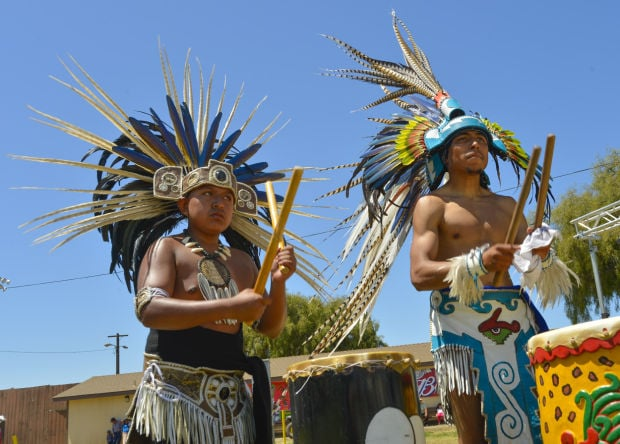
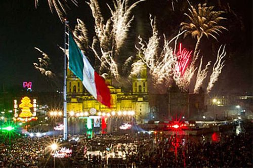

From ancient traditions to civic pride, explore the heart of public Mexican life.
These festivals often have roots predating the Spanish conquest, celebrating harvests, cycles of nature, and spiritual reverence, blending ancient indigenous beliefs with Catholicism.
This is arguably the most important indigenous cultural event in Mexico. Held in Oaxaca every July, it is a massive showcase of traditional dance, music, and food from the state's eight distinct regions. The name means "reciprocal exchange of gifts and services" in the Zapotec language, emphasizing community and collaboration.
Originating with the Nahua and Totonac peoples, this ancient ritual is performed in central Mexico. Four participants, tied by ropes, launch themselves from a pole 30 meters high, circling thirteen times to represent the 52-year cycle of the ancient calendar, praying for fertility and harvest.
These festivals are crucial for national identity, rooted in the wars for independence, the revolution, and the establishment of the modern Mexican republic.
The **most significant national holiday**, celebrating Mexico's declaration of independence from Spain. The core event is *El Grito* (The Cry of Independence), where the president or mayor rings a bell and recites a modified version of the 1810 battle cry, followed by massive fireworks and parades nationwide.
A national holiday commemorating the start of the Mexican Revolution in 1910. Instead of military parades, this is marked by large civic and sports parades, emphasizing physical fitness and participation by students and workers, celebrating modern democratic ideals.
Discover Traditional Festival Foods